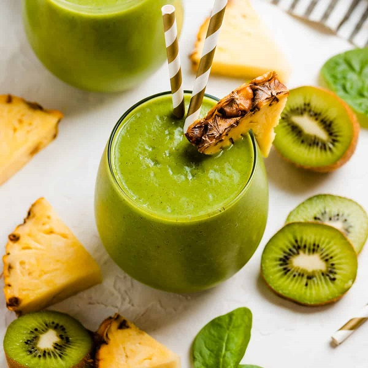

| કિવી જ્યુસ જ્યૂસના 5 સ્વાસ્થ્ય લાભો |
| વિટામિન E નો ઉચ્ચ સ્ત્રોત |
| પાચન તંત્રમાં સુધારો. |
| તમારી ત્વચાને સુંદર બનાવો. |
| તે ડાયાબિટીસને અટકાવી શકે છે. |
| તેનો ઉપયોગ અસ્થમાની સારવાર માટે થઈ શકે છે . |
|
|
- 6 - 7 નંગ કીવી
- 2 ચમચી સાકર
- 1/4 ચમચી સંચળ પાઉડર
- 1/4 ચમચી મરી પાઉડર
- પાણી જરૂર મુજબ
- ગાર્નિશીંગ માટે તુલસી નું પાન
|
|
- સૌપ્રથમ કીવી ની છાલ કાઢી બારીક ટુકડા કરી લો
- ત્યારબાદ મિક્સર જારમાં કીવી ના ટુકડા ઉમેરી તેમાં સાકર, સંચળ પાઉડર, મરી પાઉડર ઉમેરો
- પછી મિક્સરમાં પીસી લો પછી એક વાર ચેક કરી લો અને થોડું ઘટ્ટ લાગે તો 1/2 ગ્લાસ પાણી ઉમેરી પાછું એકવાર પીસી લો
- તો હવે આપણો કીવી નો જ્યુસ તૈયાર છે ખૂબ જ ટેસ્ટી લાગે છે ત્યારબાદ સર્વિસ ગ્લાસ લઈને તુલસીના પાન થી સજાવટ કરો